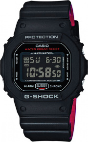

watchstore.ru
watchstore.ru
Casio G-SHOCK DW-5600HRGRZ-1E

Описание товара:
Японские наручные часы Casio G-SHOCK DW-5600HRGRZ-1E с хронографом
Характеристики товара:
| Артикул/модель | Casio DW-5600BB-1E |
| Тип механизма | кварцевый |
| Корпус | пластик |
| Циферблат | ЖК черный |
| Браслет | пластиковый |
| Водозащита | 200WR |
| Подсветка | электролюминесцентная |
| Звуковой сигнал | будильник, ежечасный сигнал |
| Стекло | минеральное |
| Календарь | автоматический: число, день недели, месяц (до 2039г) |
| Габаритные размеры | 48,9x42,8мм, толщина 13,4мм, вес 60г |
| Страна | Япония |
Подробное описание товара:
G-Specials. Электролюминесцентная подсветка освещает весь циферблат, после отпускания кнопки свечение продолжается еще некоторе время. Противоударный корпус защищает механизм от ударов и вибрации. Секундомер с двумя точностями показаний: 1/100с (до 1ч) и 1с (после 1ч) и временем измерения 24ч. Сплит-хронограф. Таймер обратного отсчета от 1мин до 24ч с автоповтором. 12-ти и 24-х часовой формат времени. Типы сигналов: ежедневный, ежемесячный, каждый день определенного месяца, на определенную дату. Световая индикация сигнала.